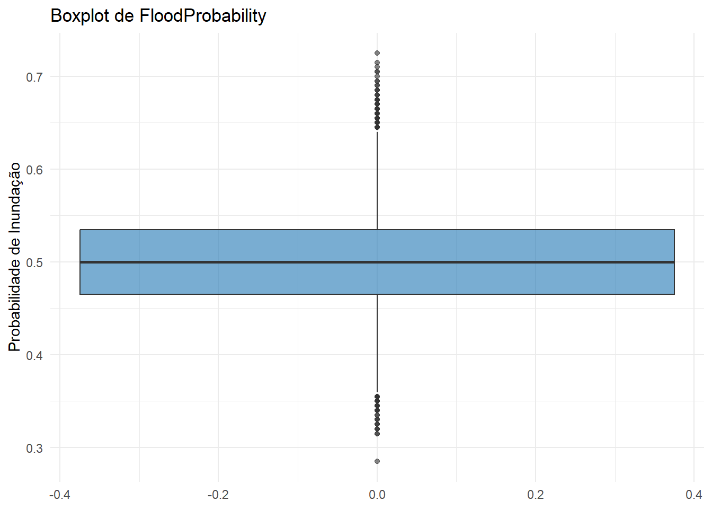

MonsoonIntensity TopographyDrainage RiverManagement Deforestation
Min. : 0.000 Min. : 0.000 Min. : 0.000 Min. : 0.000
1st Qu.: 3.000 1st Qu.: 3.000 1st Qu.: 3.000 1st Qu.: 3.000
Median : 5.000 Median : 5.000 Median : 5.000 Median : 5.000
Mean : 4.991 Mean : 4.984 Mean : 5.016 Mean : 5.008
3rd Qu.: 6.000 3rd Qu.: 6.000 3rd Qu.: 6.000 3rd Qu.: 6.000
Max. :16.000 Max. :18.000 Max. :16.000 Max. :17.000
Urbanization ClimateChange DamsQuality Siltation
Min. : 0.000 Min. : 0.000 Min. : 0.000 Min. : 0.000
1st Qu.: 3.000 1st Qu.: 3.000 1st Qu.: 3.000 1st Qu.: 3.000
Median : 5.000 Median : 5.000 Median : 5.000 Median : 5.000
Mean : 4.989 Mean : 4.988 Mean : 5.015 Mean : 4.989
3rd Qu.: 6.000 3rd Qu.: 6.000 3rd Qu.: 6.000 3rd Qu.: 6.000
Max. :17.000 Max. :17.000 Max. :16.000 Max. :16.000
AgriculturalPractices Encroachments IneffectiveDisasterPreparedness
Min. : 0.000 Min. : 0.000 Min. : 0.000
1st Qu.: 3.000 1st Qu.: 3.000 1st Qu.: 3.000
Median : 5.000 Median : 5.000 Median : 5.000
Mean : 5.006 Mean : 5.006 Mean : 5.005
3rd Qu.: 6.000 3rd Qu.: 6.000 3rd Qu.: 6.000
Max. :16.000 Max. :18.000 Max. :16.000
DrainageSystems CoastalVulnerability Landslides Watersheds
Min. : 0.000 Min. : 0 Min. : 0.000 Min. : 0.00
1st Qu.: 3.000 1st Qu.: 3 1st Qu.: 3.000 1st Qu.: 3.00
Median : 5.000 Median : 5 Median : 5.000 Median : 5.00
Mean : 5.006 Mean : 5 Mean : 4.984 Mean : 4.98
3rd Qu.: 6.000 3rd Qu.: 6 3rd Qu.: 6.000 3rd Qu.: 6.00
Max. :17.000 Max. :17 Max. :16.000 Max. :16.00
DeterioratingInfrastructure PopulationScore WetlandLoss
Min. : 0.000 Min. : 0.000 Min. : 0.000
1st Qu.: 3.000 1st Qu.: 3.000 1st Qu.: 3.000
Median : 5.000 Median : 5.000 Median : 5.000
Mean : 4.988 Mean : 4.985 Mean : 5.005
3rd Qu.: 6.000 3rd Qu.: 6.000 3rd Qu.: 6.000
Max. :17.000 Max. :19.000 Max. :22.000
InadequatePlanning PoliticalFactors FloodProbability
Min. : 0.000 Min. : 0.000 Min. :0.2850
1st Qu.: 3.000 1st Qu.: 3.000 1st Qu.:0.4650
Median : 5.000 Median : 5.000 Median :0.5000
Mean : 4.994 Mean : 4.991 Mean :0.4997
3rd Qu.: 6.000 3rd Qu.: 6.000 3rd Qu.:0.5350
Max. :16.000 Max. :16.000 Max. :0.7250
Tabela de contagem de valores ausentes (NA) por coluna
cat("\nContagem de valores ausentes por coluna:\n\n")
Contagem de valores ausentes por coluna:
na_summary <- df %>%summarize_all(~sum(is.na(.))) %>%gather(key ="variavel", value ="n_missing")kable(na_summary, col.names =c("Variável", "N de missing"))
Variável
N de missing
MonsoonIntensity
0
TopographyDrainage
0
RiverManagement
0
Deforestation
0
Urbanization
0
ClimateChange
0
DamsQuality
0
Siltation
0
AgriculturalPractices
0
Encroachments
0
IneffectiveDisasterPreparedness
0
DrainageSystems
0
CoastalVulnerability
0
Landslides
0
Watersheds
0
DeterioratingInfrastructure
0
PopulationScore
0
WetlandLoss
0
InadequatePlanning
0
PoliticalFactors
0
FloodProbability
0
Distribuição da Variável-Alvo (FloodProbability)
ggplot(df, aes(x = FloodProbability)) +geom_histogram(bins =15, fill ="#1f77b4", color ="black", alpha =0.8) +labs(title ="Distribuição de FloodProbability",x ="Probabilidade de Inundação",y ="Frequência" ) +theme_minimal()
ggplot(df, aes(y = FloodProbability)) +geom_boxplot(fill ="#1f77b4", alpha =0.6) +labs(title ="Boxplot de FloodProbability",y ="Probabilidade de Inundação" ) +theme_minimal()

Distribuição das demais variáveis preditoras
library(gridExtra)
Attaching package: 'gridExtra'
The following object is masked from 'package:dplyr':
combine
variaveis_preditoras <- df %>%select(-FloodProbability)vars_to_plot <-names(variaveis_preditoras)[1:4]plot_list <-list()for (v in vars_to_plot) { p <-ggplot(df, aes_string(x = v)) +geom_histogram(bins =15, fill ="#ff7f0e", color ="black", alpha =0.7) +labs(title =paste("Distribuição de", v),x = v,y ="Frequência" ) +theme_minimal() plot_list[[v]] <- p}
Warning: `aes_string()` was deprecated in ggplot2 3.0.0.
ℹ Please use tidy evaluation idioms with `aes()`.
ℹ See also `vignette("ggplot2-in-packages")` for more information.
do.call(grid.arrange, c(plot_list, ncol =2))
Matriz de Correlação
num_df <- df %>%select_if(is.numeric)corr_mat <-cor(num_df, use ="pairwise.complete.obs")
Exibir matriz de correlação numérica
cat("\nMatriz de Correlação (primeiras 6 linhas):\n")
cat("- O modelo de regressão explica aproximadamente", round(summary(modelo_lm)$r.squared, 3),"dos desvios em FloodProbability (R² ajustado =",round(summary(modelo_lm)$adj.r.squared, 3), ").\n- Variáveis com p-valor < 0.05 indicam influência estatisticamente significativa sobre FloodProbability.- Os coeficientes positivos (p.ex., se 'DeterioratingInfrastructure' tiver coeff > 0) sugerem que, para cada unidade adicional nessa variável, a probabilidade de inundação tende a aumentar, mantidas as demais constantes.- Da mesma forma, coeficientes negativos indicam relação inversa.\n- As métricas de erro no conjunto de teste (RMSE =", round(rmse_val, 4),", MAE =", round(mae_val, 4), ", MAPE =", round(mape_val, 2), "%) fornecem feedback sobre o quão bem o modelo está prevendo.\n- Gráfico Observado vs Previsto: se a maioria dos pontos estiver próxima à linha pontilhada (y = x), o modelo tem bom desempenho.\n")
- O modelo de regressão explica aproximadamente 0.258 dos desvios em FloodProbability (R² ajustado = 0.258 ).
- Variáveis com p-valor < 0.05 indicam influência estatisticamente significativa sobre FloodProbability.
- Os coeficientes positivos (p.ex., se 'DeterioratingInfrastructure' tiver coeff > 0) sugerem que,
para cada unidade adicional nessa variável, a probabilidade de inundação tende a aumentar, mantidas as demais constantes.
- Da mesma forma, coeficientes negativos indicam relação inversa.
- As métricas de erro no conjunto de teste (RMSE = 0.0428 , MAE = 0.0341 , MAPE = 6.92 %) fornecem feedback sobre o quão bem o modelo está prevendo.
- Gráfico Observado vs Previsto: se a maioria dos pontos estiver próxima à linha pontilhada (y = x), o modelo tem bom desempenho.